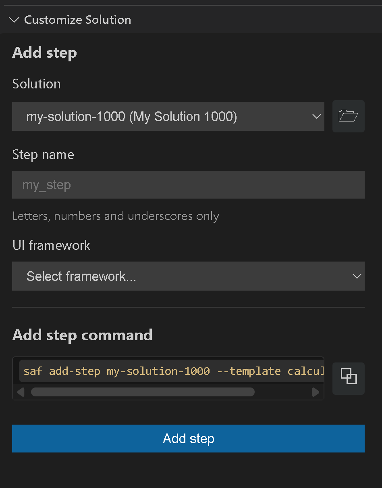

Add steps#
Steps are the building blocks of a solution workflow. Each step represents a distinct phase in the solution’s process flow, typically with its own UI and functionality. You can add steps to extend functionality without modifying the solution structure.
When to add a step
Your solution workflow needs additional logical phases
You want to break a complex process into smaller parts
You’re extending an existing solution with new capabilities
Add a step#
You can add a step to your solution using either SAF CLI or Solutions Manager.
Add a step to the solution using SAF CLI:
Run the following command:
saf add-step <solution-name>
When prompted, provide the following values, pressing Enter to select the default value or to validate non-default values provided.
Enter the name for the step.
Make sure it follows the rules described in Step naming conventions.
Select a UI framework.
Warning
You must use the same UI framework for all steps in a solution. If you try to add a step with a different UI framework than the one used to create the solution, the command returns an error.
You can add steps without a UI framework by selecting
nonefor any solution, regardless of its UI framework.Select a step template (optional).
The new step is created and integrated into your solution. Files are created and modified as described in saf add-step output.
Add a step to the solution using Solutions Manager:
Open Visual Studio Code.
In the Activity Bar, click the Solutions Manager icon.
In the Solutions Manager pane, expand the Customize Solution view.

Under Add step, provide the following values:
Select the solution where you want to add a step.
You can either select an option from the list of available solutions or browse for the solution folder of a different one.
Enter the name for the step.
Make sure it follows the rules described in Step naming conventions.
Select the UI framework.
Warning
You must use the same UI framework for all steps in a solution. If you try to add a step with a different UI framework than the one used to create the solution, the command returns an error.
You can add steps without a UI framework by selecting
nonefor any solution, regardless of its UI framework.Enter the namespace to use for the solution.
Enter the target directory where the solution will be saved.
Create the step.
Click the Add step button. Alternatively, you can copy the command under Add step command and run it in the terminal.
{kind=link}
When you open the solution, the new step will be visible in the left navigation panel.
See also
For more information on available command-line options, see saf add-step options.
Step naming conventions#
Make sure your step name follows these conventions:
A step name cannot be a path.
A step name cannot contain:
Forward-slash (
/) or backward-slash (\) charactersInvalid characters: colons (
:), semi-colons (;), asterisks (*), question marks (?), or angle quotations (<,>)
The saf add-step command#
The saf add-step command is used to add a new step to an existing solution. It integrates the step into the solution’s structure, creating necessary files and updating existing ones as described in the previous section.
saf add-step options#
The saf add-step command has multiple options. To see them all, run the following command:
saf add-step --help
The following saf add-step options are available:
Option |
Description |
|---|---|
|
The name of the step to add to the solution. |
|
Type of solution UI. |
|
The name of the step template to use. For more information, see Use step templates. |
Note
Setting these options disables their command prompt.
saf add-step output#
Adding a step generates new files and modifies existing files in the solution.
Generated files#
The following files are generated:
<solution-name>/
├───src
│ └───ansys
│ └───solutions
│ └───<solution_module>
│ ├───solution
│ │ │ my_minimal_step.py # (new)
│ └───ui
│ └───pages
│ my_minimal_page.py # (new)
Modified files#
The following files are modified accordingly:
<solution-name>/
├───src
│ └───ansys
│ └───solutions
│ └───<solution_module>
│ ├───solution
│ │ │ definition.py # (edited)
│ └───ui
│ └───pages
│ page.py # (edited)
# Added a new import and new step to the class.
from ansys.solutions.<solution_module>.solution.my_minimal_step import MyMinimalStep
class Steps(StepsModel):
my_minimal_step: MyMinimalStep
# Added a new step to the array.
page_list = [
{
"id": "my_minimal_page",
"text": "My Minimal Step",
"prefixIcon": "carbon:ibm-engineering-workflow-mgmt",
"expanded": True,
},
]
# This block is inserted under the function display_page(pathname, value):
elif value["index"] == "my_minimal_page":
return my_minimal_page.layout(project.steps.my_minimal_step)
Use step templates#
SAF ships a collection of built-in step templates that generate ready-to-use solution steps. Instead of writing boilerplate code from scratch, you can scaffold common patterns (calculator, HPS job submission, product instance management) and then customize them to fit your use case.
Prerequisites#
Before using step templates, ensure you’ve met the following prerequisites:
Prerequisite |
Description |
|---|---|
SAF Templates |
Version 4.0.1 or later. Using previous versions of the |
SAF CLI |
Version 4.0.1 or later. |
Shared Technology Components (STC) |
Some templates require a deployment of Ansys HPC Platform Services (HPS). |
Ansys products |
Depending on the template you intend to use, the corresponding Ansys product must be installed and licensed on your machine (for example, AEDT, Mechanical, MAPDL, Fluent, Geometry). |
Attention
Step templates are available in SAF CLI version 4.0.1 or later. If you are using an earlier version, you can still add a step to a solution, but you will need to implement the step logic and UI from scratch.
To manually install a newer version of the SAF Templates package, run the following command in the Python environment where SAF CLI is installed:
pip install ansys-saf-templates
Add a step from a template#
Add a new step from a template by running the saf add-step command with the --template option:
saf add-step <my_solution> --template <template_name>
If --template is omitted, the CLI interactively guides you through selecting a
template and the rest of the required parameters. You can also pass all information
as command-line arguments:
saf add-step <my_solution> --step-name <step_name> --ui-framework <ui_framework> --template <template_name>
List available templates#
You can list the available templates by running:
saf templates
This shows all the templates available in ansys-saf-templates, as well as any
additional templates from installed plugins. For information on available templates, see Step template gallery.
Step template gallery#
Template |
Description |
Dependencies |
Owner |
|---|---|---|---|
|
A step that performs calculator operations. Useful as a starting point or reference for simple computation steps. |
None |
SAF SDK |
|
A step that submits a simple job to Ansys HPC Platform Services (HPS). Generates the boilerplate for job submission, status polling, and result retrieval. |
|
SAF SDK |
|
A step that runs a parametric study on HPS. Extends the simple job step with parameter sweeps and result aggregation. |
|
SAF SDK |
|
A step for basic Geometry instance management. Handles starting, connecting to, and stopping a Geometry service instance. |
|
SAF SDK |
Calculator#
A minimal step template that performs basic calculator operations. This template is ideal for learning how SAF step templates are structured or as a starting point for custom computation steps that do not require external Ansys products.
Generated files:
solution/<step_module_name>.py— Step model with calculator logic.ui/pages/<page_file_name>.py— UI page for interacting with the step.
HPS simple job#
A step template that submits a single job to Ansys HPC Platform Services (HPS). It provides the scaffolding for defining job parameters, submitting the job, monitoring its status, and retrieving results.
Prerequisites: Access to an HPS deployment.
Generated files:
solution/<step_module_name>.py— Step model with HPS job submission logic.solution/scripts/<step_module_name>_calculate_sum_simple.py— Script executed by the HPS job.ui/pages/<page_file_name>.py— UI page for configuring and monitoring the job.
HPS parametric study#
A step template that runs a parametric study on HPS. It builds on the simple job step by adding support for defining parameter ranges, launching multiple jobs, and aggregating results.
Prerequisites: Access to an HPS deployment.
Generated files:
solution/<step_module_name>.py— Step model with parametric study logic.solution/scripts/<step_module_name>_calculate_sum.py— Script executed by each HPS job.ui/pages/<page_file_name>.py— UI page for configuring parameters and viewing results.
Geometry instance management#
A step template for managing Geometry service instances. It handles starting a Geometry service, connecting to it, and cleaning up the instance when the step completes.
Prerequisites: Ansys Geometry Service.
Generated files:
solution/<step_module_name>.py— Step model with instance management logic.ui/pages/<page_file_name>.py— UI page for instance status and control.